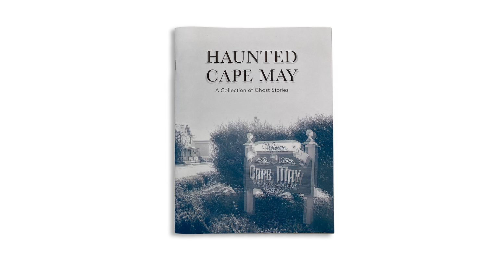
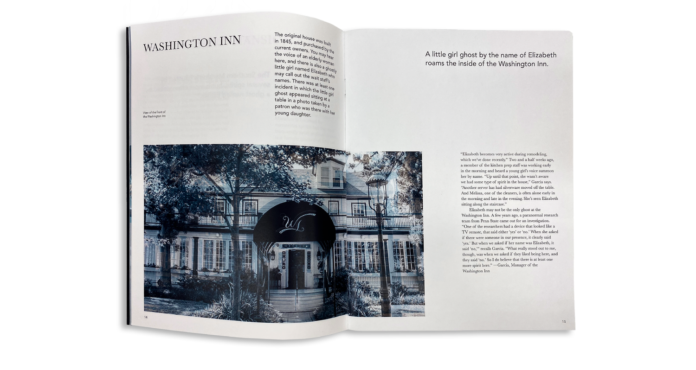
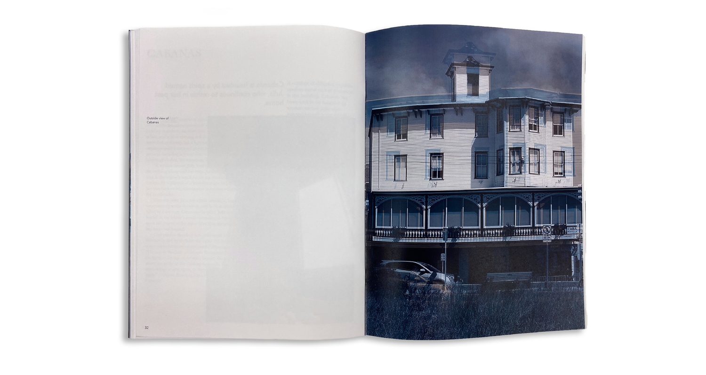
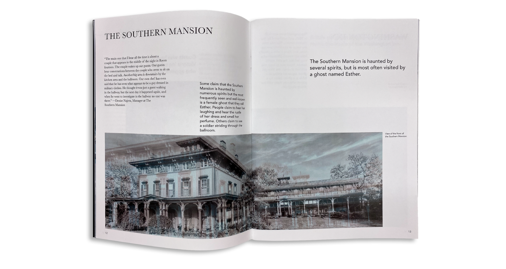

← Back
Haunted Cape May
Dive into a collection of eerie tales and historical accounts detailing the most haunted locales in Cape May, New Jersey.




Dive into a collection of eerie tales and historical accounts detailing the most haunted locales in Cape May, New Jersey.



